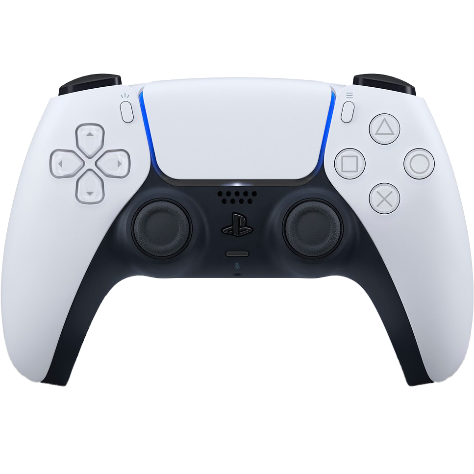

De PlayStation door de jaren heen
-
PlayStation 5
-
PlayStation 4
-
PlayStation 3
-
PlayStation 2
-
PlayStation 1
Specificaties Playstation 5
DualShock 5 controller
Meest gespeelde game
-
Met de kracht van een aangepaste CPU, GPU en SSD met geïntegreerd I/O-systeem verlegt deze PlayStation-consoles de grenzen van wat mogelijk is. Geniet van ongelooflijke graphics en ervaar nieuwe PS5-functies. Ontdek een diepere game-ervaring met ondersteuning voor haptische feedback, adaptieve triggers en 3D-audiotechnologie. Met Ray tracing ga je helemaal op in werelden die realistischer zijn dan ooit. Lichtstralen worden individueel gesimuleerd, waardoor levensechte schaduwen en reflecties worden gecreëerd in ondersteunde PS5™-games. Geniet van vloeiende gameplay met een hoge framerate tot 120 fps voor compatibele games, met ondersteuning voor 120 Hz op 4K-schermen. PS5 digitale editie is een PS5-console voor uitsluitend digitale games. Het apparaat heeft dus geen disc-speler. Uiteraard kun je via de PlayStation®Store met onder andere PlayStation tegoedkaarten games te kopen, downloaden en spelen.
- 